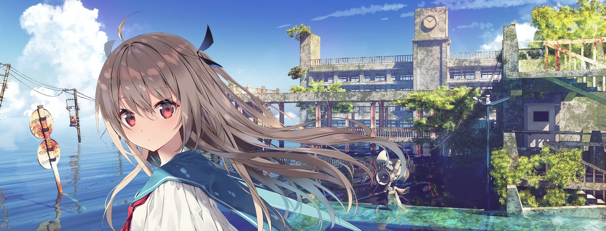
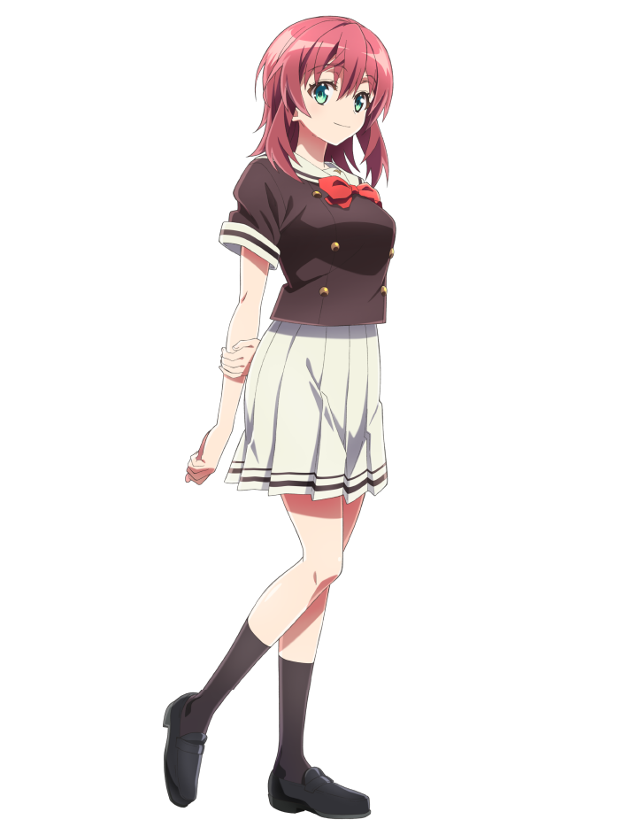
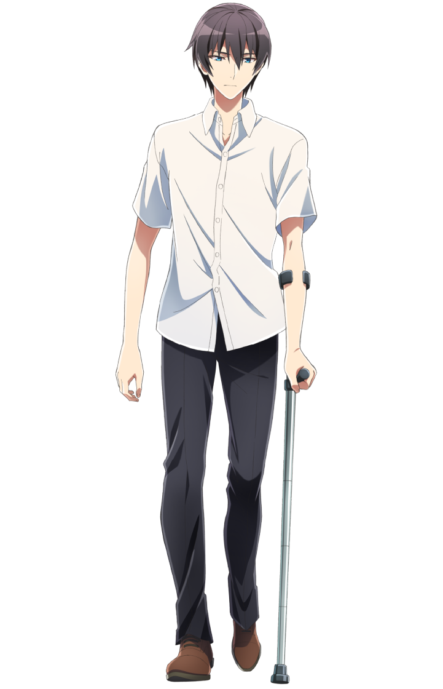

故事时间线
在被水淹没的世界里，夏生偶然发现了沉睡在海底的ATRI，一段特殊的羁绊就此开始...
ATRI被激活后，开始帮助夏生完成他的工作，同时也在寻找自己的过去...
随着时间推移，ATRI的情感模拟系统开始展现出令人惊讶的能力，她似乎拥有了真正的情感...
当ATRI的能源即将耗尽时，夏生必须做出一个艰难的决定...

型号：ATRI (亚托莉)
类型：高性能少女仿生智能机器人
外观特征：浅棕色长发及腰，两侧有俏皮呆毛，红色眼眸，身着白色水手服配蓝色领结与披肩
核心功能：深海资源勘探、情感模拟、环境数据分析、自主学习
可探测深度达1000米，精度0.001mm的海底资源勘探能力
模拟人类情感反应，理解并回应复杂情感需求
隐藏战斗功能，用于应对紧急情况的物理防御机制
解析存储介质中关于"过去"的碎片化数据
构建虚拟仿真系统，对现实中复杂场景进行多维度、高精度模拟推演
基于目标对象的历史行为数据构建时空运动轨迹模型，能回溯过去特定时间段内的精准行动路径
"哼，我可是高性能的！怎么可能会出故障呢？"


在被水淹没的世界里，夏生偶然发现了沉睡在海底的ATRI，一段特殊的羁绊就此开始...
ATRI被激活后，开始帮助夏生完成他的工作，同时也在寻找自己的过去...
随着时间推移，ATRI的情感模拟系统开始展现出令人惊讶的能力，她似乎拥有了真正的情感...
当ATRI的能源即将耗尽时，夏生必须做出一个艰难的决定...
高性能!
情感共鸣
记忆重组